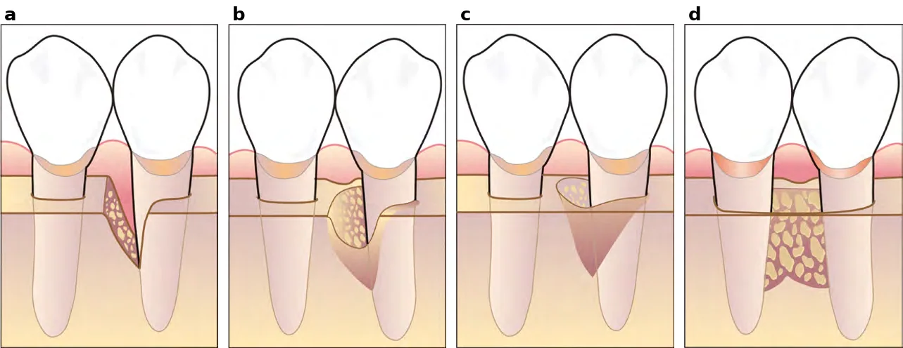

نسخه استخراجشده؛ ترجمه یا تأیید علمی انجام نشده است. وضعیت: captured
| تحلیل افقی | تحلیل عمودی (زاویهدار) | |
|---|---|---|
| شکل ستیغ | موازی با خط CEJها باقی میماند، فقط پایینتر میرود | نسبت به خط CEJها مورب میشود |
| شیوع | شایعترین الگو | کمتر شایع |
| نوع پاکت همراه | فوقاستخوانی (Suprabony): کف پاکت کرونالیتر از ستیغ | داخلاستخوانی (Infrabony): کف پاکت آپیکالتر از ستیغ |
| امکان بازسازی | عملاً ندارد | در شرایط مناسب دارد |
🔑 نکته تعیینکننده: تفاوت اصلی در رابطه کف پاکت با ستیغ استخوان است. همین یک رابطه، امکان بازسازی را تعیین میکند.
نقصهای داخلاستخوانی را بر پایه شمار دیوارههای استخوانی باقیمانده دستهبندی میکنیم:

| نوع | دیوارههای باقیمانده | پتانسیل بازسازی |
|---|---|---|
| سهدیواره | باکال، لینگوال، پروگزیمال | 🟢 بهترین |
| دودیواره (کریتر) | معمولاً باکال و لینگوال | 🟡 متوسط |
| یکدیواره | فقط یک دیواره | 🔴 ضعیف |
| ترکیبی | تعداد دیواره در ارتفاعهای مختلف فرق میکند | وابسته به بخش آپیکال |
🔑 قاعده کلیدی: هرچه دیوارههای باقیمانده بیشتر باشد، پتانسیل بازسازی بهتر است؛ چون دیوارهها هم منبع سلولهای استخوانساز و خونرسانیاند و هم فضای لخته را نگه میدارند.
⚠️ در نقص ترکیبی، پیشآگهی را بخش آپیکال تعیین میکند، نه بخش کرونال.
گودی فرورفته در ستیغ بیندندانی که بین دیواره باکالی و لینگوالی محصور شده است.
یک نقص دودیوارهای است.
حدود یکسوم تمام نقصها و حدود دوسوم نقصهای فک پایین را تشکیل میدهد.
در نواحی خلفی شایعتر است.
تعداد دیوارهها مستقیماً انتخاب درمان را تعیین میکند:
نقص سهدیواره عمیق و باریک ⬅️ بهترین کاندید بازسازی (پیوند استخوان، GTR).
کریتر دودیواره ⬅️ اغلب با استئوپلاستی و بازسازی شکل استخوان اداره میشود.
نقص یکدیواره ⬅️ معمولاً رویکرد رزکتیو.
تحلیل افقی ⬅️ بازسازی عملاً ممکن نیست.
⚠️ اشتباه رایج ۱: پاکت داخلاستخوانی با تحلیل عمودی همراه است، نه افقی.
⚠️ اشتباه رایج ۲: نقص سهدیواره بهترین پیشآگهی بازسازی را دارد، نه یکدیواره.
⚠️ اشتباه رایج ۳: کریتر بیندندانی دودیواره است.